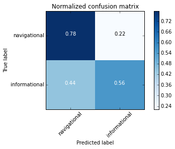
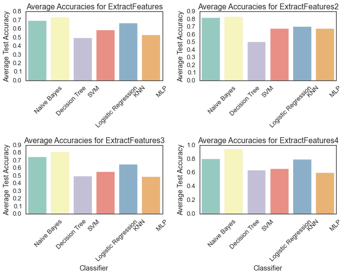
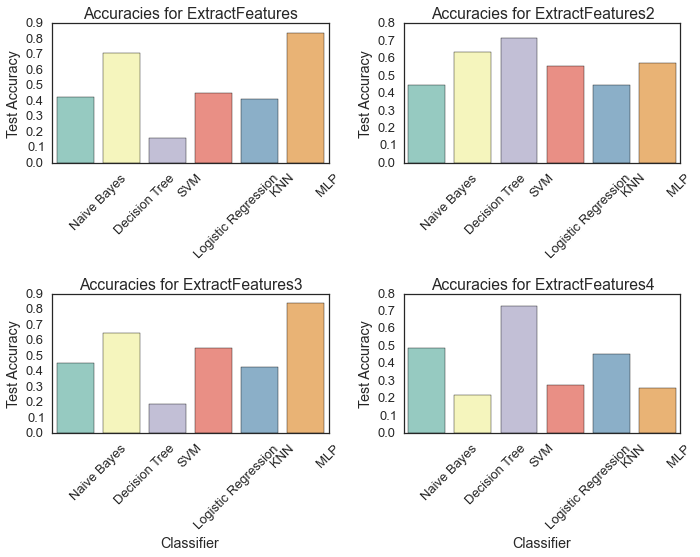
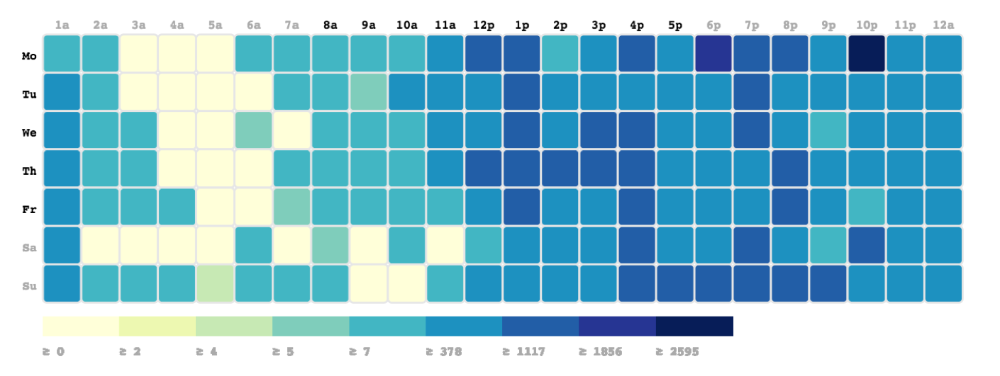
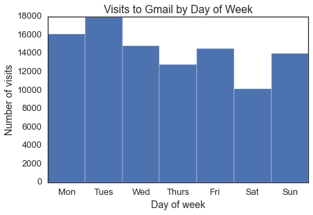
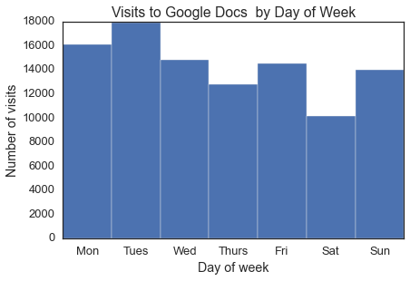
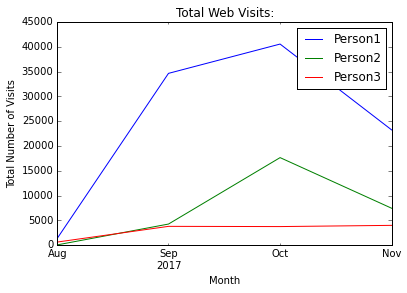
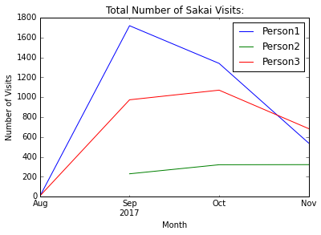

Contents:
- Informational vs Navigational Searches Classifier
- An Analysis of My Browsing/Searching History
- Browsing Activity During the School Year
- Code/Data
Informational vs. Navigational Searches Classifier
Background and Goal
The goal here was to create a classifier to determine whether a given search query is informational, or navigational. Informational searches, as defined in the paper the paper 'A taxonomy of web search', are searches traditionally thought of in information retrieval, in which the purpose of the query is to access information on the web in static form, without a specific web page in mind. For example: 'What is the capital of South Dakota?' Navigational searches are searches for which the query's purpose is to lead the user to a particular site which they know exists. For example: 'facebook'.
Data
The data used to train this classifier was data related to Wellesley Searches. Using Selenium, the query 'wellesley college' was sent to Google, and the related search terms were collected. Using breadth-first, 4 levels of such related search phrases were collected, and stored in the file sorted_wellesley_searches.json. The phrases that contained 'wellesley' in it were then given to Google again to collect the first page generated from each of them. This data collection process was performed in the Selenium Searches notebook. All queries obtained from this search were labeled(each query labeled by 4 people) as either navigational('n') or informational('i'). After calculating the Fleiss' Kappa measure for inter-rater agreement for these labels, we found that many queries didn't have a consensus. These queries were included, resulting in a final data set of 83 navigational queries and 125 informational queries. This labeled data is stored in the file labeled-data_final.csv. Since this data was used to train the classifier, it was important to ensure that the imbalance in numbers of navigational and information searches wouldn't bias the classifier to distinguish between these query types of queries based only on their relative frequencies in the training data set. Therefore, for use in the classifier, we created datasets with equal numbers of navigational and informational queries. This data was further divided up into three sets: a training set(~80% of the data), development set(~10% of the data), and testing set(~10% of the data).
Feature Design and Extraction
In order to determine which queries are navigational and which are informational, the classifier needs to be trained using particular features of these queries. To explore different features of the queries, we build a number of feature extractors, each incorporating different features, to test with the classifiers described below. Each of these feature extractors is summarized below, named according to the function names in the searchesClassifier notebook:
- featureExtractor:This feature extractor uses just 3 simple features: 1) the number of characters in the query, 2) the number of words in the query, and 3) whether the query starts with one of the following question words:'who','what','when','where','why','is','does','how','who','are'
- featureExtractor2:This feature extractor incorporates an additional feature: the number of
words of a particular part of speech(e.g. noun, verb, adjective) in the query. We used the
nltk.pos_tagfunction to extract the number of each part of speech in a given search phrase, resulting in such counts for 45 parts of speech - featureExtractor3:We worried that the 45 parts of speech counts returned by featureExtractor2 could potentially overwhelm the other features, or result in a feature set that was too sparse. In an attempt to avoid this issue, we also defined another feature extractor to count only three general parts of speech: nouns, adjectives, and verbs
- featureExtractor4:In addition to looking at the features of the query itself, we also looked at the google search page that the query produces, to try to identify if the search query is informational or navigational. Using selenium, we extracted the features of the search pages, including the links, titles of the search results, and snippets of the returned pages. Specifically, we decided to use this data by looking at the similarity of the query to the returned link/title/snippet. For example, we hypothesized, a navigational search like 'facebook' would likely yield a top google search result with a title and url of the same name: facebook, while an informational search like ' what is the capital of south dakota' would produce a top search result with no such matching url or title. We decided to look only at the first result, since we assumed that a navigational search would likely return the intended website as the first result. To quantify the similarity between a query and its results, we represented all of the strings(search query, title, url, snippet) as Tfidf vectors, and calculated the cosine similarity between the search query and each of the other three features. We also defined another feature to be the similarity with only the main part of the url(before the first backslash').
Classifiers
For each method of feature extraction, we extracted features of the training data, and used this to train a classifier. We tested a number of different types of classifiers, including a Naive Bayes Classifier,Decision Tree Classifier,Support Vector Machine Classifier,Logistic Regression,K-nearest-neighbors classifier,and a Multi-layer perceptron classifier. Hyperparameters of these classifiers were tuned on the labeled training data. We evaluated the performance of each of these classifiers by calculating the accuracy on the labeled testing data. To ensure that the accuracy reported was a reliable measure, 10-fold cross-validation was used with each classifier. The accuracy values reported subsequently in this report are the average accuracies from this 10-fold cross-validation.
In addition to the accuracy values, the performance of the classifiers was also evaluated using confusion matrices, to show where the errors were in the labels assigned by the classifier to the test data. In the example confusion matrix showed below, for instance, (which uses a Naive Bayes classifier and featureExtractor(with only the basic 3 features)) shows that the classifier does a good job of properly identifying navigational queries, with 78% of the navigational queries correctly labeled as such. The classifier performs more poorly, but still above chance, on correctly identifying informational queries, with 56% of informational queries in the test set correctly labeled as such. The classifier seems to run into trouble however, with a large number of informational queries (44%), which it incorrectly labels as navigational. 22% of navigational queries are also incorrectly labeled as informational.
This process was repeated for all 4 feature extraction schemes, and 6 classifier types. The average test accuracies obtained with cross-validation are summarized in the plots below.
Across the board, the Decision Tree classifier yielded the highest test accuracies, with the average test accuracy using extractFeatures4(the most complex set of features incorporating search results) being 0.994. The Decision Tree classifier also performed well on simpler sets of features however, yielding a test accuracy of 0.833 for extractFeatures2(with # characters, # words, question words, and 45 parts of speech) and a test accuracy of 0.808for extractFeatures3(with # of characters, # of words, question words, and 3 parts of speech). For most of the classifiers tested, accuracy was highest when extractFeatures4 was used, indicating that including the similarity of the query with features of the top result does add value to the classifier. However, the accuracy improvement is only marginally significant when compared with the worst-performing set of features(extractFeatures) (t=1.83,p=0.09).
Testing The Classifier on External Data
In order to see how well the classifier trained on the wellesley college search data can generalize to other search queries, I labeled 250 of the search queries from my own search history (extracted using selenium) in the SQL for Chrome History notebook>. This labeled search data is stored in the file isabel-labeled-searches.csv.Because I was the only one to label this data and therefore couldn't calculate a Fleiss Kapa score of inter-rater agreement, I discarded queries which I considered to be ambiguous. This set of 250 queries included 83 navigational queries and 124 informational queries. I used each of the feature extraction schemes described above to extract features from these queries, and passed them as test data to each of the classifiers. The resulting test accuracies are summarized in the plots below.
The highest test accuracy obtained using my own search terms was 84%,obtained using extractFeatures3(# characters, # words, question words, 3 parts of speech) and the multi-layer perceptron.This is an indication that the classifier is able to generalize well to external data, without overfitting to the wellesley searches training data. This model also performed well on the simpler set of features produced by extractFeatures, with a test accuracy of 83.5%.Other models performed less well, with the nieve bayes classifier producing test accuracies of less than 50% for this data, and the decision tree producing test accuracies around 65%. It is to be expected that performance of the classifier on this data, which was rather different than the set of related training queries, would be worse than that on a testing set of similar wellesley searches. However, it seems that, at least with some models and feature sets, we are able to obtain fairly accurate predictions.
The full analysis can be found in this notebook
An Analysis of my Browsing/Search History
As a starting point, to analyze my browsing habits and search history, I used a combination of the sqlite3 module and visualizations produced using Web Historian. I analyzed all of the data that I had stored for my Chrome browser, which extends from August 2017 to present(late November 2017).Some of these preliminary findings are displayed below:
This visualization shows that the website I visit most frequently is Google Docs( visited 58901 times in this period), followed by my gmail(7801 times in this period).As part of this analysis, I decided to investigate how often I access these sites on average, per day. I calculated that I check my email an average of 80.62times per day. This same analysis shows that I access google docs an average of 648 times per day.This value seems unreasonable, and is likely a result of GoogleDocs periodically re-loading the page to autosave, which is registered as a separate browsing event.
As this visualization shows, I tend to do most of my browsing in the evenings, with Monday at 10pm being the time with the most searches.It also seems that I do slightly less browsing on weekends(especially in the mornings and early afternoon).
Based on this heatmap, I decided to further investigate the question of how my browsing
habits differ between weekdays and weekends. Particularly, I asked the question, Do I
visit more websites during the week than I do on weekends?To visualize this, I labeled
all of the browsing events by day of the week(using the pandas datetimemodule)
and separated weekend and weekday browsing events. I analyzed both the total number of searches
by day(over the time period collected), and the average number of searches by day.
The results of this analysis are displayed
in the graph below.
These results show that the total number of websites that I visited on weekdays is not significantly different from the number of websites that I visit on weekends (two-tailed t-test, t=1.5094, p=0.316). The average number of websites visited on weekdays and weekends is also not significantly different (t=1.332, p=0.189). However, I wondered if there could still be differences in my search behavior between weekdays and weekends. Particularly, I asked, Do I visit more 'academic' resources(particularly google docs, and gmail, which I use primarily for academics) on weekdays, than on weekends?I repeated the analysis above for these two sites individually. The results are shown below:
 These results show that again, the total number of visits to GMail is not significantly different between weekdays and weekends(t=1.509, p=0.315). Similarly, the total number of visits to Google Docs is not significantly different between weekdays and weekends (t=1.509, p=0.315). It seems that despite some assumptions that I had about visiting more 'school-related' sites during the week, I do this just as frequently on weekends.
This analysis can be found in this notebook
Analysis of Broswing During the School Year
As part of our analysis, we also decided to look at the question of how browser activity changes between the summer and the schoolyear(since the Chrome history files that we collected contain data from August-November. Specifically, we hypothesized that browser activity will increase as the school year progresses. We first looked at total browser activity for the three people from which we collected data. Our analysis confirms our hypothesis. In fact, we can see that browser use increases dramatically at the beginning of September and continues to increase throughout the following months. This is the case even though the three people sampled had very different numbers of total visits.
We next looked specifically at Sakai searches to see if this effect would be even more dramatic(since we expected Sakai would be used almost exclusively during the school year).The results support this. In fact, Person2 never visited Sakai before September.
Potential future question: Is the difference in the number of searches from Aug-Sept statistically significant? Is this difference greater for Sakai visits than overall visits (in terms of percent change)?
This analysis can be found in this notebook .
Code/Data
You can view the code used to do this data analysis(and some other analyses not described above through the notebooks linked below: